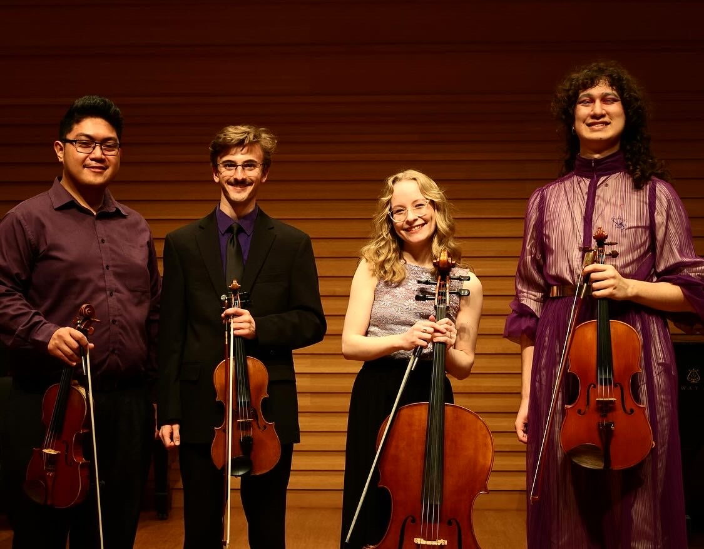
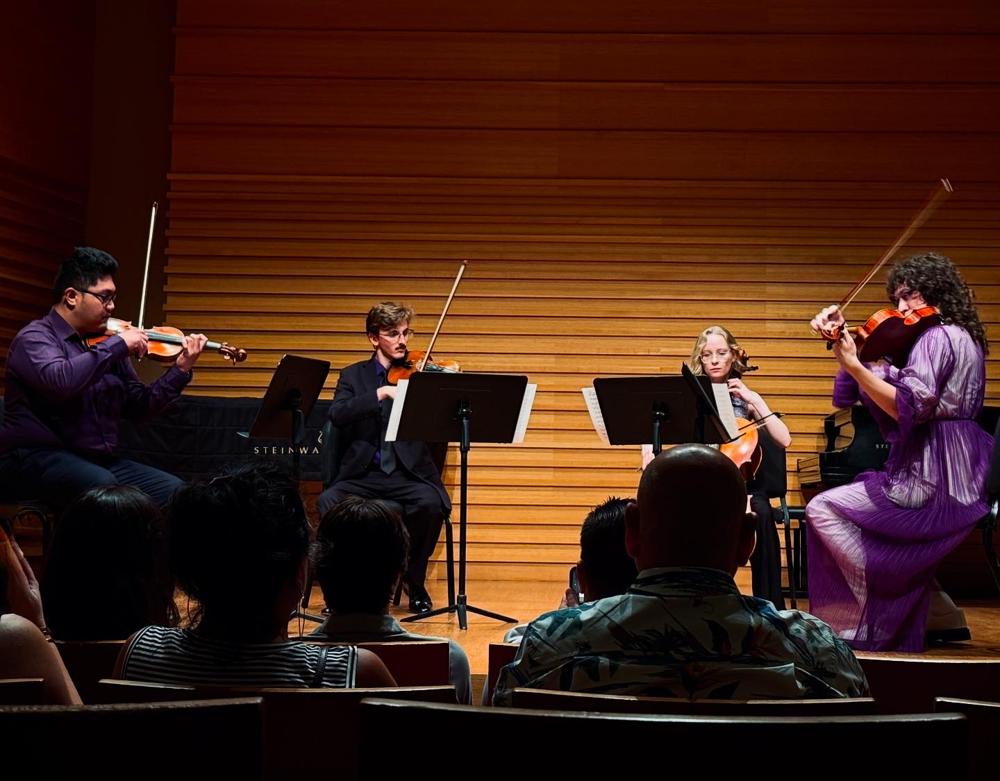
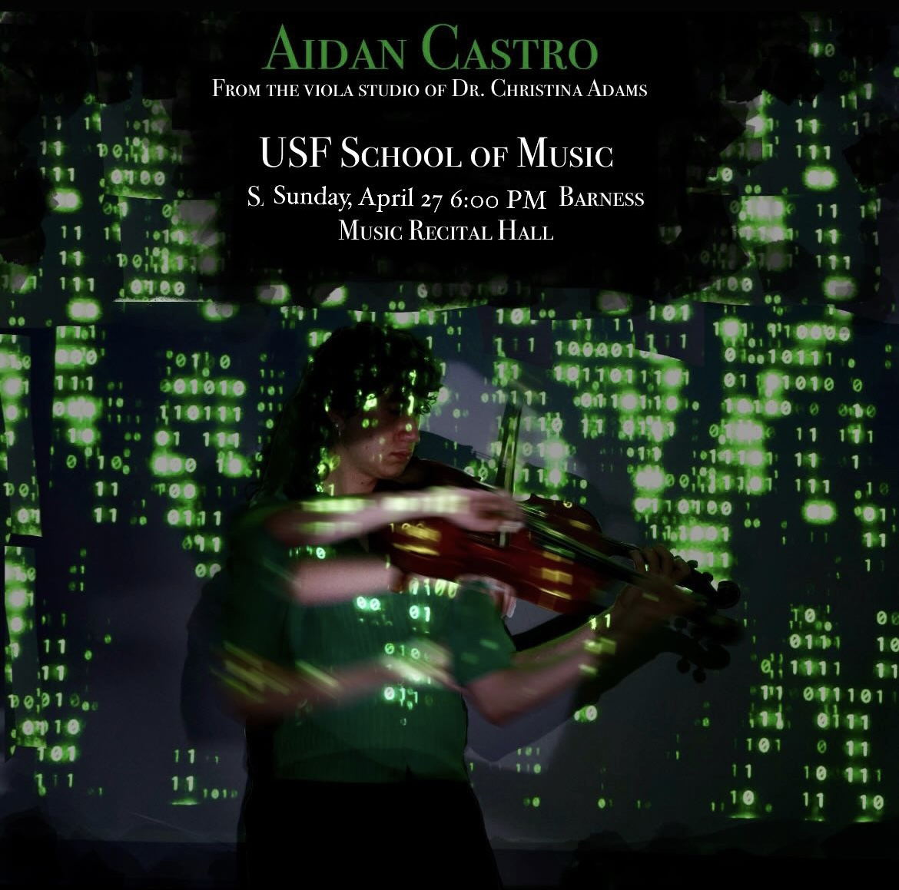
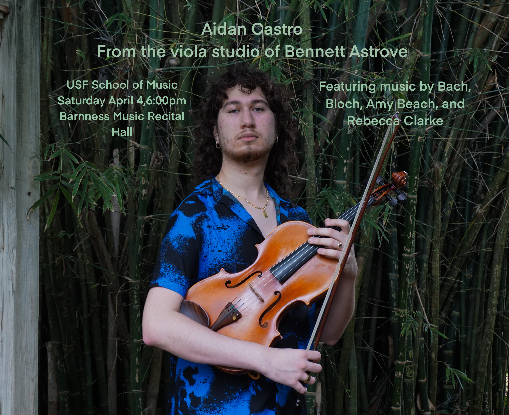

Viola & chamber.
A second discipline, not a hobby. Recital programming, chamber collaboration, and a focus on 20th-century viola repertoire.
Why both.
Chamber music demands the same analytical attention as antenna design — phase relationships, balance, timing, the discipline of listening for what's actually there versus what you expect. The two disciplines reinforce each other rather than compete.
I'm seeking PhD programs with strong RF/radar research groups in cities with chamber music ecosystems; a parallel master's in viola performance would let me continue serious chamber work alongside research.
Solo Viola & Chamber Music.

On stage — Bloch

Chamber quartet

Ensemble collaboration

S25 recital flyer

S26 recital flyer
← scroll →
Performance recordings.
Bloch — Suite Hébraïque
Clarke — Two Pieces for Viola & Cello
Bach — Cello Suites Nos. 1 & 3 (transc. viola)
Beach — Romance
↳ Replace src="about:blank" with your YouTube embed URL: https://www.youtube.com/embed/VIDEO_ID
Complete repertoire.
A full list of orchestral, chamber, and solo works performed, sorted alphabetically by composer.
Orchestral
| Composer | Work |
|---|---|
| John Adams | Short Ride in a Fast Machine |
| Béla Bartók | Romanian Folk Dances for String Orchestra |
| Ludwig van Beethoven | Symphonies Nos. 5 & 6 Triple Concerto for Violin, Cello & Piano |
| Hector Berlioz | Symphonie fantastique |
| Leonard Bernstein | Symphonic Dances from West Side Story Overture to Candide |
| Max Bruch | Romance Violin Concerto No. 1, I |
| Anna Clyne | Masquerade |
| Aaron Copland | Appalachian Spring (orchestral & 13-player versions) |
| Paul Dukas | The Sorcerer's Apprentice |
| Edward Elgar | Cello Concerto in E minor, I |
| Gerald Finzi | Romance, Op. 11 for String Orchestra |
| Arthur Frackenpohl | Concertino for Tuba and String Orchestra |
| George Gershwin | Porgy and Bess: A Symphonic Picture |
| Andrew Grenci | Concerto in Rock for Bass Clarinet |
| Edvard Grieg | Piano Concerto, I Holberg Suite |
| Jennifer Higdon | Blue Cathedral |
| Gustav Holst | Brook Green Suite for String Orchestra |
| Jacques Ibert | Flute Concerto, I & II |
| Erich Korngold | Violin Concerto, I. Moderato nobile |
| Morten Lauridsen | Lux Aeterna |
| Gustav Mahler | Symphony No. 1 |
| Toshiro Mayuzumi | Concertino for Xylophone and Orchestra |
| Missy Mazzoli | Orpheus Undone |
| Felix Mendelssohn | Violin Concerto, I |
| José Pablo Moncayo | Huapango |
| W. A. Mozart | Overture to The Marriage of Figaro Overture to The Magic Flute |
| Sergei Prokofiev | Sinfonia Concertante for Cello and Orchestra, I & II Violin Concerto No. 2, I |
| Sergei Rachmaninoff | Symphonic Dances Symphony No. 2 |
| Maurice Ravel | Mother Goose Suite |
| Ottorino Respighi | Pines of Rome |
| Dmitri Shostakovich | Symphony No. 5 |
| Jean Sibelius | Symphony No. 5 |
| Pyotr Ilyich Tchaikovsky | Serenade for Strings Symphony No. 5, IV Romeo and Juliet Overture |
| Augusta Read Thomas | Sunburst |
| Ralph Vaughan Williams | Prelude, 49th Parallel |
| John Williams | E.T.: Adventures on Earth Close Encounters of the Third Kind Hook: Flight to Neverland Star Wars: Leia's Theme Star Wars: The Imperial March Suite from Jaws Theme from Jurassic Park |
Chamber
| Composer | Work |
|---|---|
| Elfrida Andrée | Piano Quintet in E minor, I & II |
| Amy Beach | Romance |
| Ludwig van Beethoven | Trio in C, Op. 87 (arr. two violins & viola), I & II |
| Ernest Bloch | Piano Trio, I |
| Alexander Borodin | Piano Quintet in E minor String Quartet, I |
| Rebecca Clarke | Two Pieces for Viola and Cello |
| Joseph Haydn | String Quartet, Op. 33 No. 3, I |
| Scott Slapin | Trio for Two Violas and Piano |
| Bedřich Smetana | String Quartet No. 1 |
Solo
| Composer | Work |
|---|---|
| J. S. Bach | Cello Suites Nos. 1 & 3 (transc. viola) |
| Ernest Bloch | Suite Hébraïque, I, II, III |
| Johannes Brahms | Sonata No. 2 in E-flat Major |
| Alexander Glazunov | Élégie |
| Johann Nepomuk Hummel | Fantasie |
| Igor Stravinsky | Élégie for Solo Viola |
| William Walton | Viola Concerto |
| Carl Friedrich Zelter | Viola Concerto in E-flat Major |